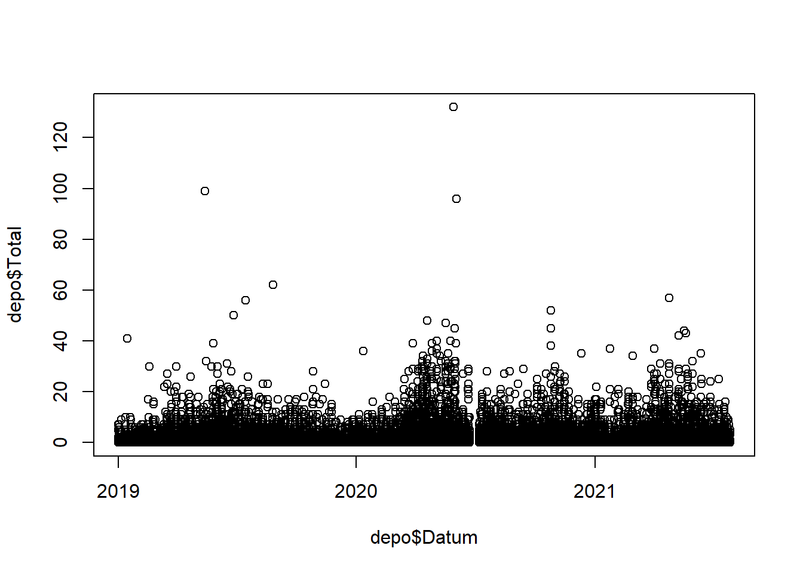
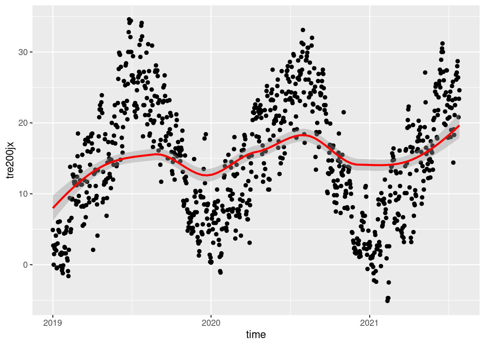

5. Lösung
Aufgabe 1: Zähldaten
#.################################################################################################
# 1. DATENIMPORT #####
#.################################################################################################
# Beim Daten einlesen koennen sogleich die Datentypen und erste Bereinigungen vorgenommen werden
# 1.1 Zaehldaten ####
# Die Zaehldaten des Wildnispark wurden vorgaengig bereinigt. z.B. wurden Stundenwerte
# entfernt, an denen am Zaehler Wartungsarbeiten stattgefunden haben.
# lese die Daten mithilfe der Bibliothek data.table ein (alternative zu read_csv und dergleichen).
# Je nach Bedarf muss der Speicherort sowie der Dateiname angepasst werden
depo <- fread(here("data","211_sihlwaldstrasse_2017_2021.csv"))
# Hinweis zu den Daten:
# In hourly analysis format, the data at 11:00 am corresponds to the counts saved between
# 11:00 am and 12:00 am.
# Anpassen der Datentypen und erstes Sichten
str(depo)
depo <- depo %>%
mutate(Datum_Uhrzeit = as.character(DatumUhrzeit)) %>%
separate(Datum_Uhrzeit, into = c("Datum", "Zeit"), sep = " ")%>%
mutate(Datum = as.Date(Datum, format = "%d.%m.%Y")) %>%
# Schneide das df auf den gewuenschten Zeitraum zu
filter(Datum >= depo_start, Datum <= depo_end) # das Komma hat die gleiche Funktion wie ein &
# In dieser Auswertung werden nur Velos betrachtet!
depo <- depo[,-c(1,4,5), drop=FALSE] # mit diesem Befehl lassen wir Spalten "fallen",
# aendern aber nichts an der Form des data.frames
# Berechnen des Totals, da dieses in den Daten nicht vorhanden ist
depo <- depo%>%
mutate(Total = Fuss_IN + Fuss_OUT)
# Entferne die NA's in dem df.
depo <- na.omit(depo)Aufgabe 2: Meteodaten
# 1.2 Meteodaten ####
# Einlesen
meteo <- fread(here("data","order_97149_data.txt"))
# Datentypen setzen
# Das Datum wird als Integer erkannt. Zuerst muss es in Text umgewaldelt werden aus dem dann
# das eigentliche Datum herausgelesen werden kann
meteo <- transform(meteo, time = as.Date(as.character(time), "%Y%m%d"))
# Die eigentlichen Messwerte sind alle nummerisch
meteo <- meteo%>%
mutate(tre200jx = as.numeric(tre200jx))%>%
mutate(rre150j0 = as.numeric(rre150j0))%>%
mutate(sremaxdv = as.numeric(sremaxdv)) %>%
filter(time >= depo_start, time <= depo_end) # schneide dann auf Untersuchungsdauer
# Was ist eigentlich Niederschlag:
# https://www.meteoschweiz.admin.ch/home/wetter/wetterbegriffe/niederschlag.html
# Filtere Werte mit NA
meteo <- meteo %>%
filter(!is.na(stn)) %>%
filter(!is.na(time))%>%
filter(!is.na(tre200jx))%>%
filter(!is.na(rre150j0))%>%
filter(!is.na(sremaxdv))
# Pruefe ob alles funktioniert hat
str(meteo)
sum(is.na(meteo)) # zeigt die Anzahl NA's im data.frame anAufgabe 3: Datenvorverarbeitung (Mutationen)
#.################################################################################################
# 2. VORBEREITUNG DER DATEN #####
#.################################################################################################
# 2.1 Convinience Variablen ####
# fuege dem Dataframe (df) die Wochentage hinzu
depo <- depo %>%
mutate(Wochentag = weekdays(Datum)) %>%
# R sortiert die Levels aplhabetisch. Da das in unserem Fall aber sehr unpraktisch ist,
# muessen die Levels manuell manuell bestimmt werden
mutate(Wochentag = base::factor(Wochentag,
levels = c("Montag", "Dienstag", "Mittwoch",
"Donnerstag", "Freitag", "Samstag", "Sonntag"))) %>%
# Werktag oder Wochenende hinzufuegen
mutate(Wochenende = if_else(Wochentag == "Montag" | Wochentag == "Dienstag" |
Wochentag == "Mittwoch" | Wochentag == "Donnerstag" |
Wochentag == "Freitag", "Werktag", "Wochenende"))%>%
#Kalenderwoche hinzufuegen
mutate(KW= week(Datum))%>%
# monat und Jahr
mutate(Monat = month(Datum)) %>%
mutate(Jahr = year(Datum))
# Lockdown
# Hinweis: ich mache das nachgelagert, da ich die Erfahrung hatte, dass zu viele
# Operationen in einem Schritt auch schon mal durcheinander erzeugen koennen.
# Hinweis II: Wir packen alle Phasen (normal, die beiden Lockdowns und Covid aber ohne Lockdown)
# in eine Spalte --> long ist schoener als wide
depo <- depo %>%
mutate(Phase = if_else(Datum >= lock_1_start_2020 & Datum <= lock_1_end_2020,
"Lockdown_1",
if_else(Datum >= lock_2_start_2021 & Datum <= lock_2_end_2021,
"Lockdown_2",
if_else(Datum < lock_1_start_2020,
"Normal", "Covid"))))
# hat das gepklappt?!
unique(depo$Phase)
# aendere die Datentypen
depo <- depo %>%
mutate(Wochenende = as.factor(Wochenende)) %>%
mutate(KW = factor(KW)) %>%
# mit factor() koennen die levels direkt einfach selbst definiert werden.
# wichtig: speizfizieren, dass aus R base, ansonsten kommt es zu einem
# mix-up mit anderen packages
mutate(Phase = base::factor(Phase, levels = c("Normal", "Lockdown_1", "Lockdown_2", "Covid")))
str(depo)
# Fuer einige Auswertungen muss auf die Stunden als nummerischer Wert zurueckgegriffen werden
depo$Stunde <- as.numeric(format(as.POSIXct(depo$Zeit,format="%H:%M"),"%H"))
# Die Daten wurden kalibriert. Wir runden sie fuer unserer Analysen auf Ganzzahlen
depo$Total <- round(depo$Total, digits = 0)
depo$Fuss_IN <- round(depo$Fuss_IN, digits = 0)
depo$Fuss_OUT <- round(depo$Fuss_OUT, digits = 0)Aufgabe 4: Aggregierung der Stundendaten
# 2.3 Aggregierung der Stundendaten zu ganzen Tagen ####
# Zur Berechnung von Kennwerten ist es hilfreich, wenn neben den Stundendaten auch auf Ganztagesdaten
# zurueckgegriffen werden kann
# hier werden also pro Nutzergruppe und Richtung die Stundenwerte pro Tag aufsummiert
depo_d <- depo %>%
group_by(Datum, Wochentag, Wochenende, KW, Monat, Jahr, Phase) %>%
summarise(Total = sum(Fuss_IN + Fuss_OUT),
Fuss_IN = sum(Fuss_IN),
Fuss_OUT = sum(Fuss_OUT))
# Wenn man die Convinience Variablen als grouping variable einspeisst, dann werden sie in
# das neue df uebernommen und muessen nicht nochmals hinzugefuegt werden
# pruefe das df
head(depo_d)
# Gruppiere die Werte nach Monat
depo_m <- depo %>%
group_by(Jahr, Monat) %>%
summarise(Total = sum(Total))
# sortiere das df aufsteigend (nur das es sicher stimmt)
depo_m <- as.data.frame(depo_m)
depo_m[
with(depo_m, order(Jahr, Monat)),]
# mache dann aus Jahr und Monat faktoren
depo_m <- depo_m %>%
mutate(Jahr = as.factor(Jahr)) %>%
mutate(Monat = as.factor(Monat)) %>%
mutate(Ym = paste(Jahr, Monat)) %>% # und mache eine neue Spalte, in der Jahr und
mutate(Ym= factor(Ym, levels=unique(Ym))) # Monat in zusammen sind
# Beispiele pruefen der Daten:
# Verteilung mittels Histogram pruefen
hist(depo$Total[!depo$Total==0] , breaks = 100) 
# hier schliesse ich die Nuller aus der Visualisierung aus
# Verteilung mittels Scatterplot pruefen
plot(x=depo$Datum, y=depo$Total)
# Temperaturmaximum
ggplot(data=meteo, mapping=aes(x=time, y=tre200jx))+
geom_point()+
geom_smooth(col="red")